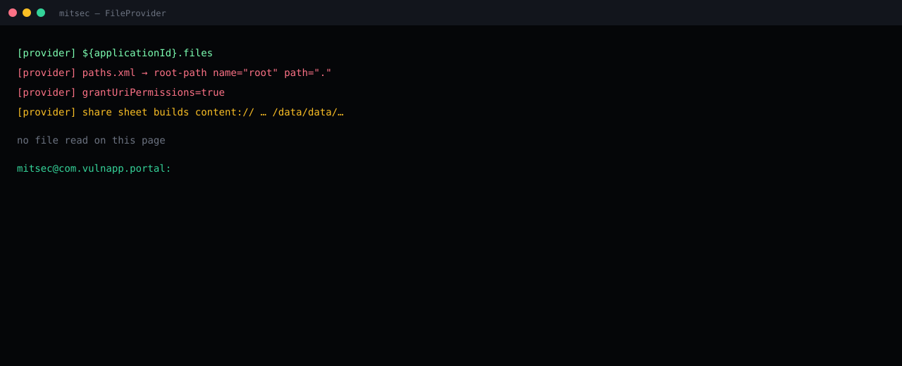

The provider tree started at / and grants were sticky.
Manifest + res/xml/paths.xml on the authorized lab APK.
root-path name=root path=. grantUriPermissions=true.
files-path or cache-path only. Narrow the URI. Drop the grant when the sheet closes.
Summary
Lab package com.vulnapp.portal declared ${applicationId}.files as a FileProvider with grantUriPermissions=true. The path file contained <root-path name="root" path="." />. A share action in the app built a content:// URI under that authority and handed it to an implicit sheet with read-grant flags.
root-path is the device filesystem as the provider sees it, not “the pictures folder.” Combined with a grant, a receiving app that keeps the URI can ask the portal to open files the portal’s UID can open — including its own private tree — without the provider being exported.

What AndroScope printed
[provider] ${applicationId}.files [provider] paths.xml → root-path name="root" path="." [provider] grantUriPermissions=true [provider] share sheet builds content:// … under that authority no file read on this page mitsec@com.vulnapp.portal:
Why export=false is not the fix
Android checks provider permissions when a foreign UID talks to the provider directly. A grant attached to a URI the portal itself minted is a different door. The portal is the client of its own provider. The foreign app only holds the URI.
files-path and cache-path still need a tight path. external-path is shared storage, not an excuse for root-path.
Fix
- Delete
root-path. Map one subdirectory. - Grant only for the URI you just created. Revoke when the sheet is done.
- Do not put shared_prefs, databases, or token files under a mapped tree.
- Treat a share-sheet grant as a capability leak until the path file is boring.